Niger drought AA — landing page site
Niger drought AA — landing page (all 2026 products)
GitHub PagesOCHA Centre for Humanitarian Data · Data Science
Everything the team publishes — anticipatory-action trigger monitors, exposure dashboards, forecast explorers, data mirrors and rendered analyses — in one place. Generated from the team knowledge base, so it tracks what is actually deployed.
Trigger monitoring, forecast checks and design notes for the frameworks in the OCHA/CERF portfolio.
Niger drought AA — landing page (all 2026 products)
GitHub Pages2026 framework snapshot at the default thresholds (EN; /static/2026/fr/ in French)
GitHub PagesHCT briefing deck — El Niño & the 2026 season (EN/FR; what El Niño does and doesn't mean for Niger, observed season, remaining forecast, 2026 vs past CERF drought years, three scenarios)
GitHub PagesJun–Jul rainfall vs the observational trigger (ERA5/CHIRPS proxies while ENACTS pending)
GitHub PagesNiger drought trigger explorer (marimo WASM, iri-trend branch docs/)
GitHub Pages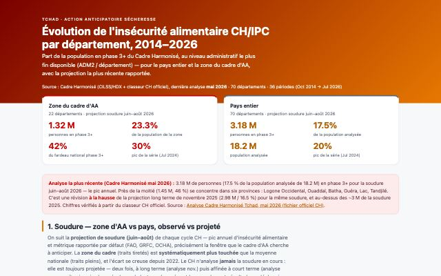
Fenêtre 3 (biomasse) — résultat de fin de saison 2026: dekad-24 anomaly 54.6% vs the 84.5% threshold, i.e. trigger threshold MET (passphrase-gated since d56c2ce; plaintext still readable in public git history at 96af2d3)
GitHub Pages🔒 passwordTchad HNRP 2027 — indice de risque sécheresse par département (bilingual FR/EN; planning input, NOT the trigger)
GitHub Pages
Tchad — évolution CH/IPC par département (situational context, NOT the trigger)
GitHub Pages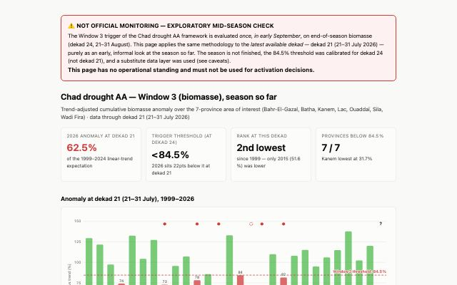
Unofficial exploratory mid-season Window-3 biomass read, dekad 21 2026 (banner-flagged NOT OFFICIAL MONITORING)
GitHub Pages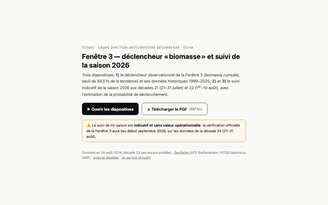
Window-3 trigger explainer slides + dekad-24 backtest 1999–2025 + 2026 read (3 slides)
GitHub PagesBurkina Faso drought AA — analyses and monitoring notes (site repo ocha-dap/ds-aa-bfa-drought)
GitHub PagesTrigger zones and existing coverage — Uganda flood AA (zones + other organisations' flood AA, their triggers and status)
GitHub Pages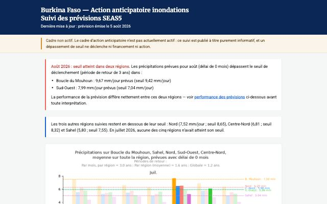
Burkina Faso — Action anticipatoire inondations (page d’accueil du site)
GitHub PagesSuivi des prévisions SEAS5 — saison 2026 (état mensuel Jul/Aug/Sep vs seuils, performance des prévisions)
GitHub Pages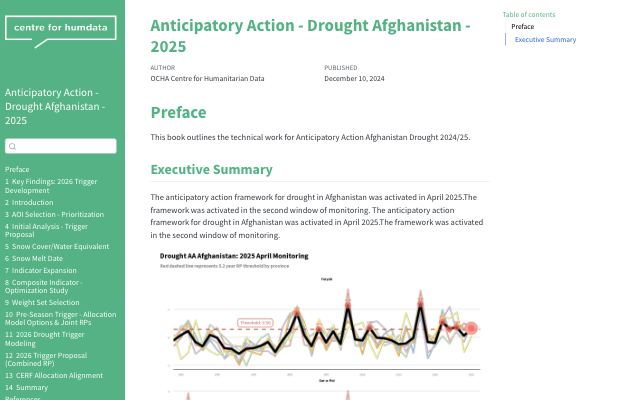
Afghanistan drought analysis book (Quarto, Netlify — personal account)
Netlify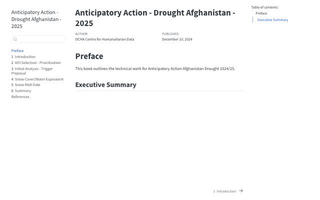
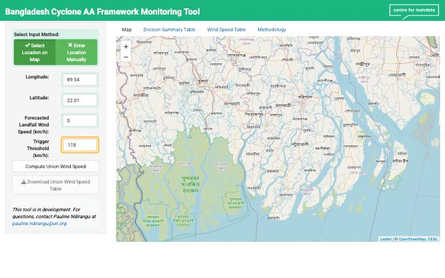
Bangladesh cyclone monitoring app (Shiny; App Service ds-aa-bgd-cyclone-monitoring)
Azure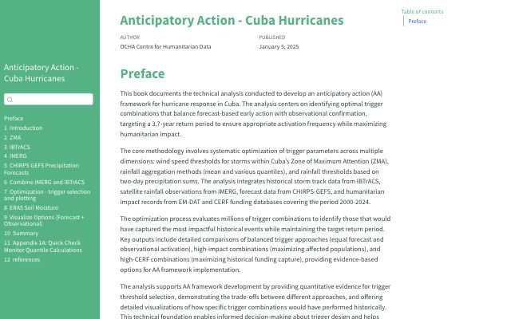
Cuba hurricanes analysis book (Quarto, Netlify)
Netlify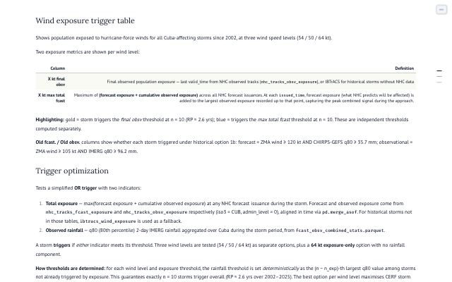
Cuba hurricanes trigger app (Azure web app chd-ds-cub-trigger)
AzureCOD IDSR data-evaluation book (Quarto; private-repo Pages)
GitHub Pages🔒 private repoCentral American Dry Corridor — 2026 season update: drought trigger development & forecast evaluation (passphrase)
GitHub Pages🔒 password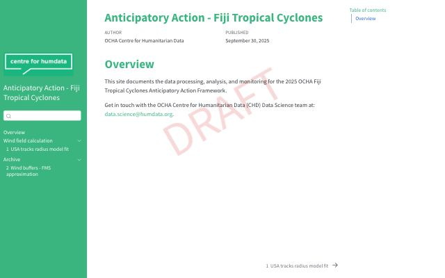
Anticipatory Action — Fiji Tropical Cyclones (Quarto site)
GitHub Pages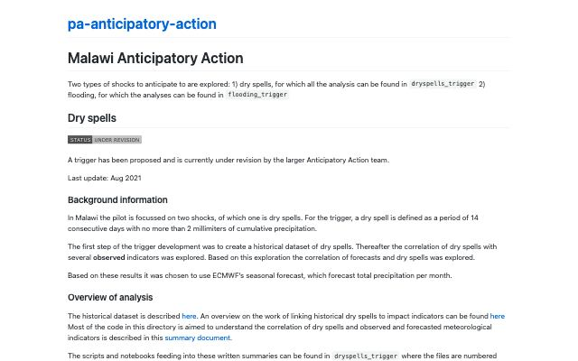
Malawi drought exploratory trigger analysis (legacy pa-anticipatory-action monorepo site)
GitHub Pages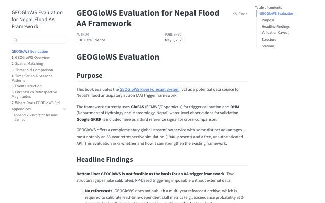
GEOGloWS evaluation for the Nepal flood AA framework (Quarto)
GitHub Pages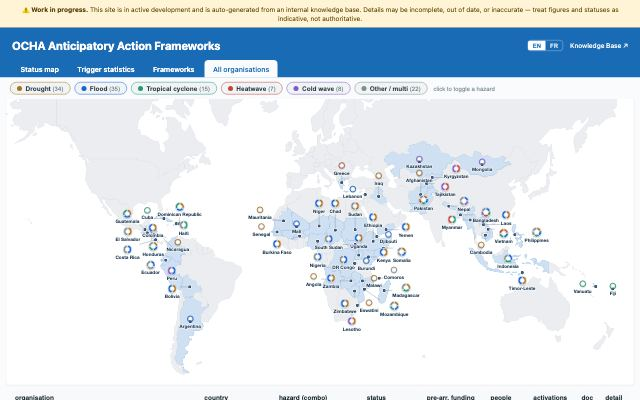
Living systems: near-real-time monitoring, alert pages, and the data mirrors they publish.
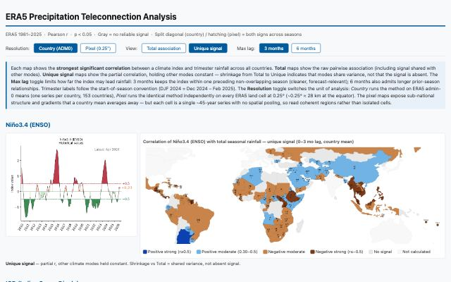
Teleconnections (ENSO/IOD/PDO) docs & maps (served from feature/era5-ghpages docs/)
GitHub PagesEritrea ENSO deep dive (kiremti; regrade robust → moderate)
GitHub PagesGlobal teleconnection survey (ERA5 × ENSO/IOD/TNA/TSA/AMM/PDO, country + pixel)
GitHub PagesMalawi ENSO deep dive (late-season, southern-half signal; national DJF cancels)
GitHub PagesZimbabwe ENSO deep dive — how bad is 2026/27, how confident, how much El Niño (with CERF + FEWS NET season table)
GitHub PagesAction anticipatoire Haïti — le mécanisme de déclenchement proposé (hand-edited deck)
GitHub Pages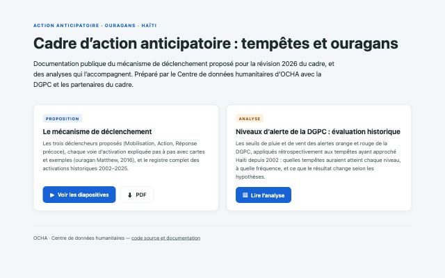
Alerte orange de la DGPC par département — simulation historique (current; build_dgpc_dept_page.py)
GitHub PagesAvis par avis : carte interactive — advisory-by-advisory storm map (build_dgpc_map.py)
GitHub PagesNiveaux d'alerte de la DGPC — évaluation historique (archived; build_dgpc_page.py)
GitHub Pages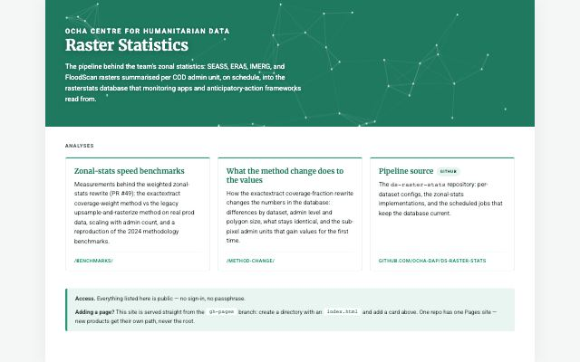
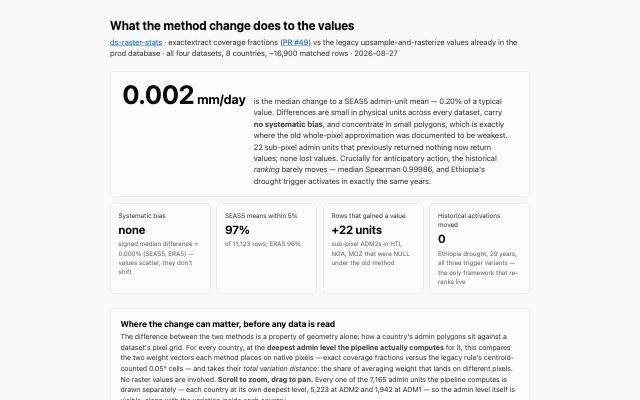
Method-change value comparison (exactextract vs legacy, all 4 datasets)
GitHub Pages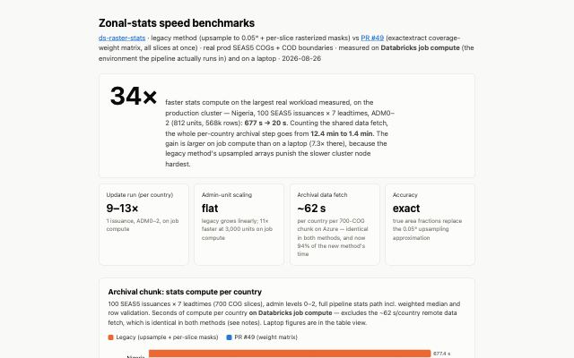
Zonal-stats speed benchmarks (incl. 2024-methodology reproduction)
GitHub Pages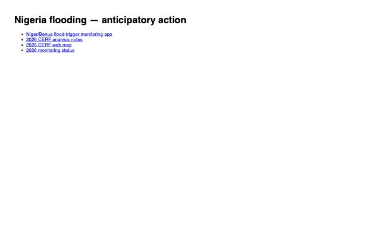
Nigeria flooding — anticipatory action (site landing page)
GitHub Pages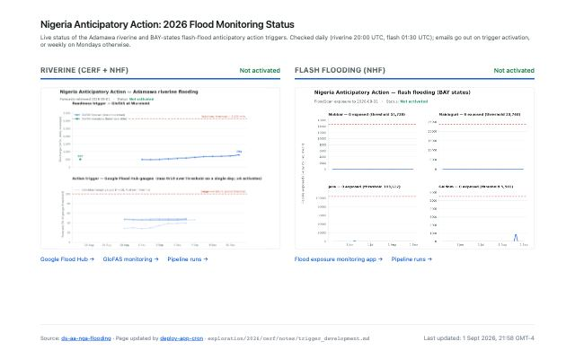
Nigeria flood monitoring public status page (status.json + PNGs from the monitoring-status branch)
GitHub PagesVenezuela earthquake dashboard (private Enterprise-org repo Pages)
GitHub Pages🔒 private repoAA tracking review site (staticrypt; tables, ERDs, reconciliation queues)
GitHub Pages🔒 passwordACLED Trends data downloads (password-gated; CSVs client-side encrypted)
GitHub Pages🔒 password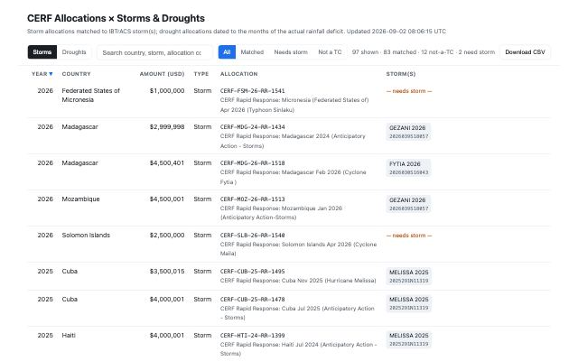
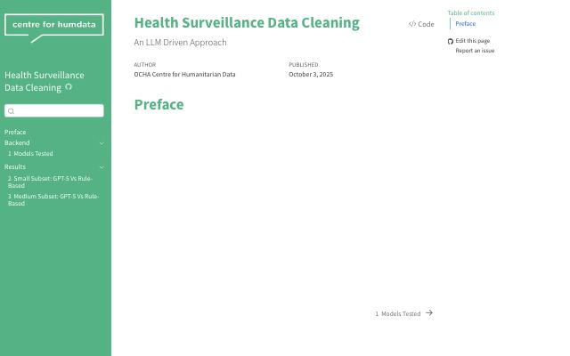
Cholera PDF-scraper (LLM extraction) book (Quarto, Netlify; auto-named URL, typo is real)
Netlify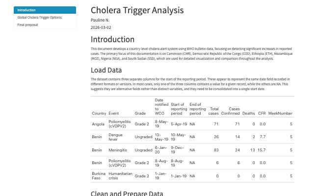
Cholera Trigger Analysis — country-level cholera alert system from WHO bulletin data (Quarto)
GitHub Pages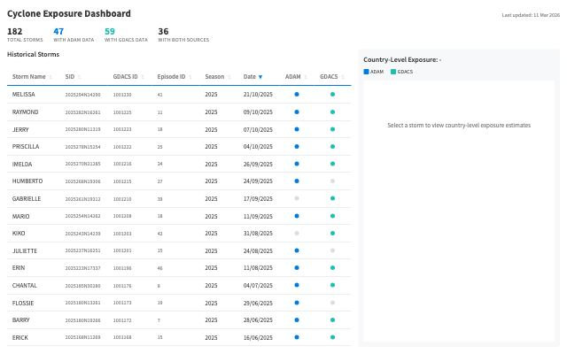
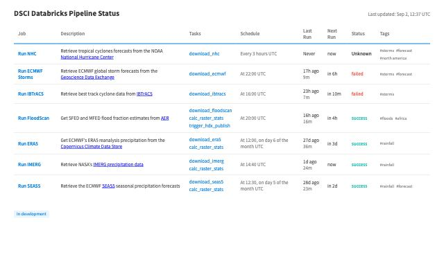
DSCI Pipeline Status dashboard (Databricks-only; superseded by infrastructure/pipeline-registry.md)
GitHub Pages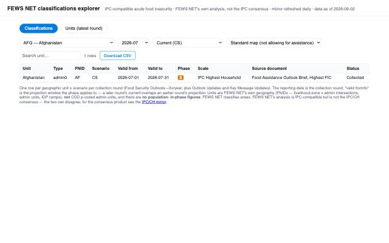
FEWS NET mirror explorer (Classifications / Units, CSV download)
GitHub Pages
Global Flood Monitoring book (Quarto, Netlify)
Netlify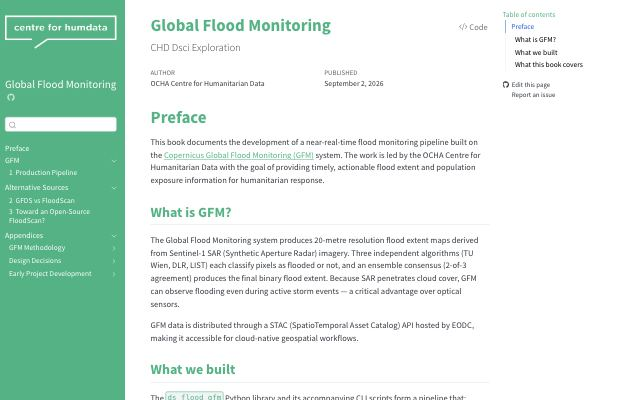
Global Flood Monitoring — CHD DS exploration (Quarto)
GitHub Pages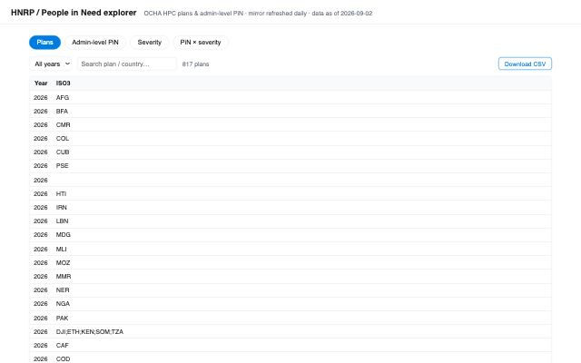
HNRP / PiN mirror explorer (Plans, admin-level PiN, severity; CSV download)
GitHub Pages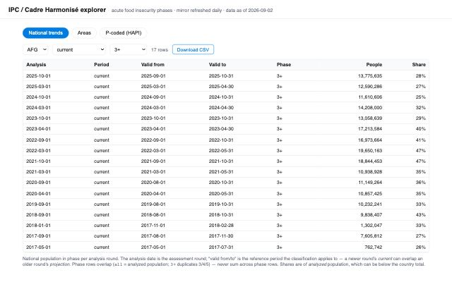
IPC/CH mirror explorer (National trends / Areas / P-coded; CSV download)
GitHub Pages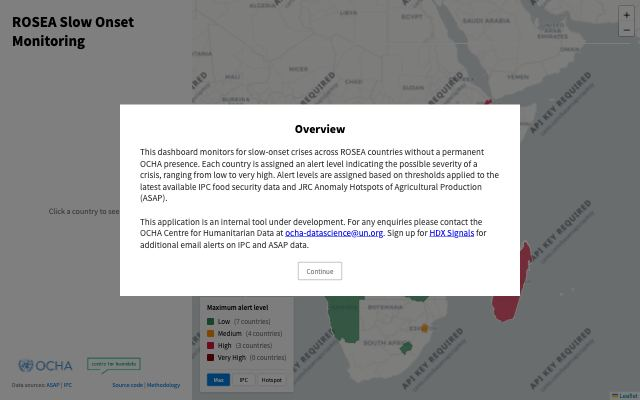
ROSEA thresholds monitoring dashboard (index.html on main; 'internal tool under development')
GitHub Pages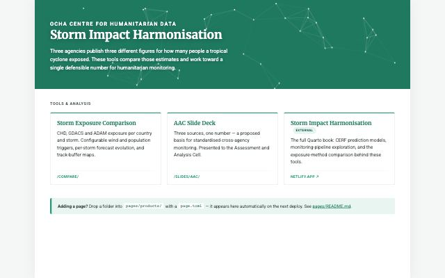
Storm impact harmonisation site landing page (manifest-driven, pages/products/*/page.toml)
GitHub PagesInteractive tools — hosted on Azure or as static sites — for exploring exposure, forecasts and allocations.
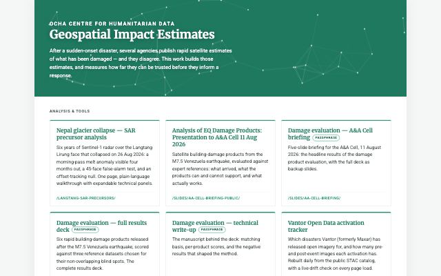
Map-first viewer comparing multi-source satellite damage-exposure estimates for the same admin/H3 unit
GitHub PagesMap-first viewer comparing multi-source satellite damage-exposure estimates for the same admin/H3 unit
GitHub PagesMap-first viewer comparing multi-source satellite damage-exposure estimates for the same admin/H3 unit
GitHub PagesMap-first viewer comparing multi-source satellite damage-exposure estimates for the same admin/H3 unit
GitHub PagesMap-first viewer comparing multi-source satellite damage-exposure estimates for the same admin/H3 unit
GitHub Pages🔒 password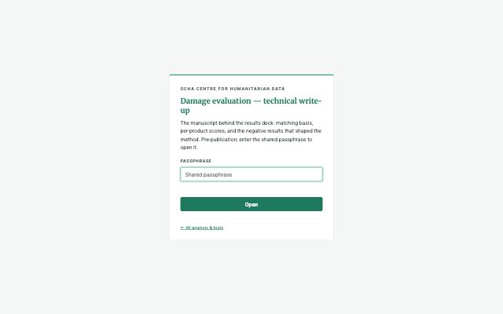
Map-first viewer comparing multi-source satellite damage-exposure estimates for the same admin/H3 unit
GitHub Pages🔒 passwordMap-first viewer comparing multi-source satellite damage-exposure estimates for the same admin/H3 unit
GitHub PagesMap-first viewer comparing multi-source satellite damage-exposure estimates for the same admin/H3 unit
GitHub Pages🔒 passwordMap-first viewer comparing multi-source satellite damage-exposure estimates for the same admin/H3 unit
GitHub Pages🔒 passwordMap-first viewer comparing multi-source satellite damage-exposure estimates for the same admin/H3 unit
GitHub Pages🔒 password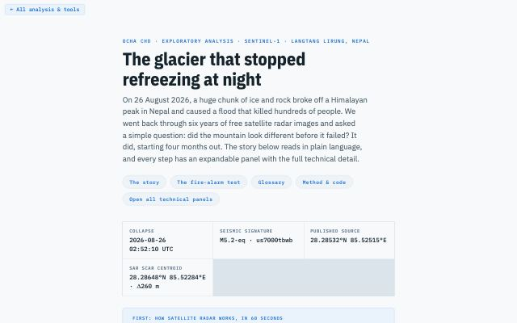
Map-first viewer comparing multi-source satellite damage-exposure estimates for the same admin/H3 unit
GitHub Pages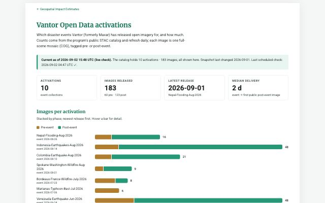
Map-first viewer comparing multi-source satellite damage-exposure estimates for the same admin/H3 unit
GitHub Pages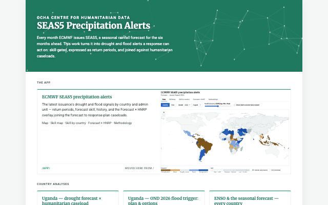
Interactive SEAS5 precipitation skill and alert explorer — shows forecast percentile vs. Pearson-r skill for every monitored country, every trimester, for any issued month/year back to 1981.
GitHub Pages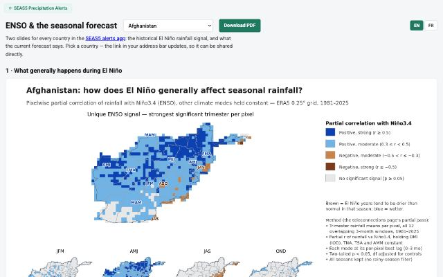
Interactive SEAS5 precipitation skill and alert explorer — shows forecast percentile vs. Pearson-r skill for every monitored country, every trimester, for any issued month/year back to 1981.
GitHub PagesInteractive SEAS5 precipitation skill and alert explorer — shows forecast percentile vs. Pearson-r skill for every monitored country, every trimester, for any issued month/year back to 1981.
GitHub Pages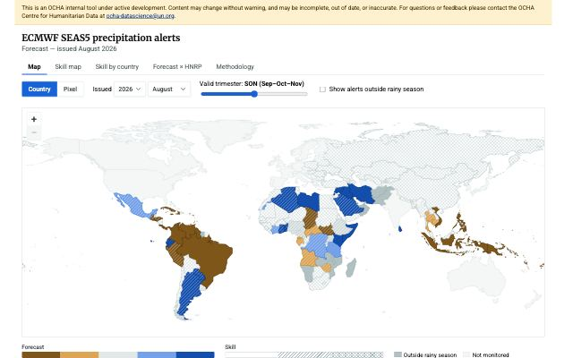
Interactive SEAS5 precipitation skill and alert explorer — shows forecast percentile vs. Pearson-r skill for every monitored country, every trimester, for any issued month/year back to 1981.
GitHub Pages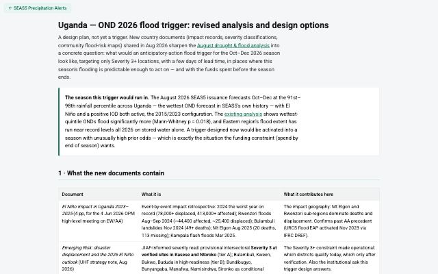
Interactive SEAS5 precipitation skill and alert explorer — shows forecast percentile vs. Pearson-r skill for every monitored country, every trimester, for any issued month/year back to 1981.
GitHub Pages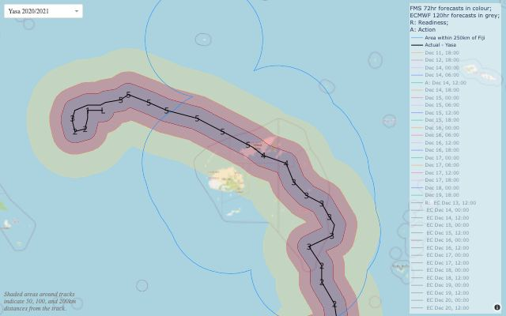
Interactive map of historical tropical cyclone tracks and hindcast forecasts for the Fiji Anticipatory Action framework, used to review how past triggers fired.
AzureDash map + timeline for exploring how each historical Haiti hurricane forecast performed against the AA framework's readiness/action trigger thresholds
Azureprobe failedStatic Quarto book exploring the BAY-states (Borno/Adamawa/Yobe) 2018-2023 cholera line-list and a candidate anticipatory-action trigger
AzureAzure web app ds-aa-cerf-allocations — not yet described in the knowledge base.
Azure🔒 internalAzure web app chd-ds-aa-extract — not yet described in the knowledge base.
Azure🔒 internal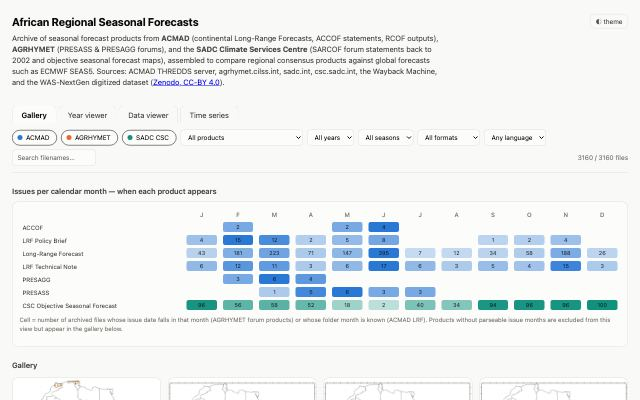
Gallery, year-viewer and gridded data viewer of African regional seasonal forecast products (ACMAD, AGRHYMET, SADC CSC) for comparison against global forecasts (SEAS5)
GitHub Pages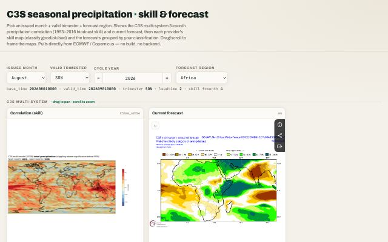
Compare C3S seasonal precipitation skill (1993–2016 hindcast correlation) with the current operational forecast for each contributing system; classify systems good/ok/bad and regroup forecasts by skill.
GitHub Pages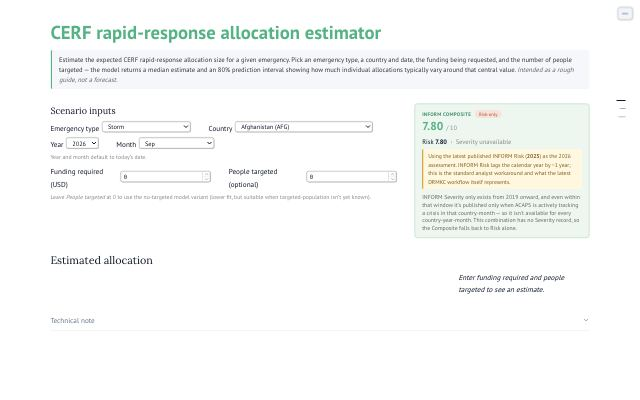
Estimate CERF rapid-response allocation size for a given emergency using an OLS model trained on 2016+ 3RM data.
Azure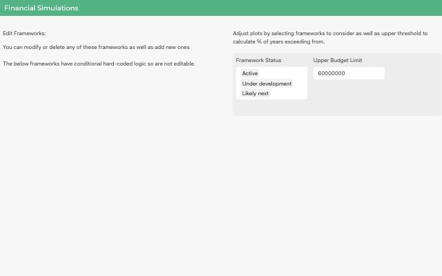
Monte Carlo–simulate CERF's aggregate AA financial exposure across the whole portfolio of trigger frameworks → an interactive Shiny dashboard for CERF colleagues to explore budget-exceedance risk and premium/deductible scenarios for a hypothetical CERF AA insurance mechanism.
shinyapps.io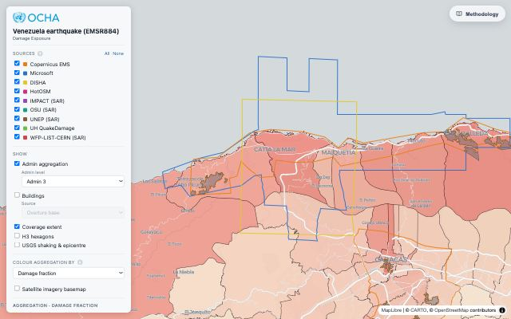
Map-first viewer comparing multi-source satellite damage-exposure estimates for the same admin/H3 unit
Azure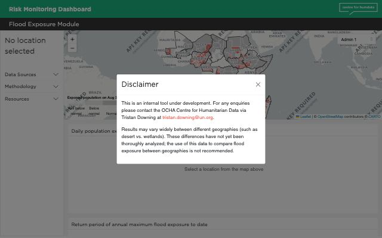
Interactive map and chart showing near-real-time population exposure to flooding (Floodscan × WorldPop) across 12 countries, with return-period context.
Azure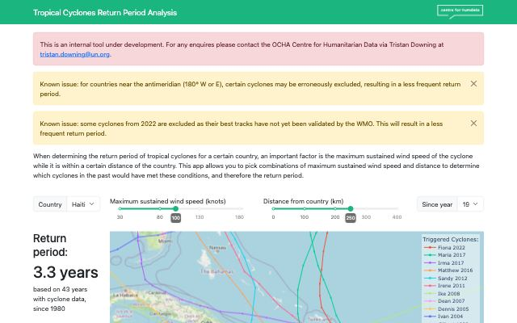
Interactive return-period explorer for tropical cyclones — lets users dial wind-speed and distance thresholds to determine which historical storms would have triggered for any country, and cross-checks against EM-DAT impact and CERF allocation data.
AzureAzure web app chd-ds-kb-chat from ds-kb-chatbot — not yet described in the knowledge base.
Azure🔒 internalInteractive SEAS5 precipitation skill and alert explorer — shows forecast percentile vs. Pearson-r skill for every monitored country, every trimester, for any issued month/year back to 1981.
AzureInteractive scatter-plot explorer comparing SEAS5 seasonal rainfall forecasts against ERA5 reanalysis and EM-DAT flood impact, per admin division, for any country/season
AzureAzure web app chd-ds-seasonality — not yet described in the knowledge base.
Azure🔒 internalInteractive comparison of CHD (forecast-only + observed) vs GDACS vs ADAM per-country tropical-cyclone population exposure, with configurable trigger thresholds and a Weibull return-period readout.
GitHub PagesAzure web app chd-ds-storms-alerts from ds-storms-alerts — not yet described in the knowledge base.
Azure🔒 internalAzure web app chd-ds-storms-explore — not yet described in the knowledge base.
Azure🔒 internalLive indicator-reporting explorer for CBPF US Award (NSFT) projects, read straight from the public OneGMS/CBPF API
GitHub PagesStatic GitHub Pages map+table of population-in-damaged-buildings per admin per damage source for the 2026-06-24 Venezuela earthquake, with an HNO pre-existing-need overlay. Its own in-repo one-off pipelines pre-compute the data it serves.
GitHub PagesRendered analyses, reports and slide decks: regional overviews, ad-hoc activations, method studies.
Multi-model (GloFAS / Google Flood Hub / GEOGloWS) riverine flood trigger design for the Juba and Shabelle, calibrated against SWALIM gauges — the proposed mechanism for a Somalia flooding AA framework
GitHub PagesMulti-model (GloFAS / Google Flood Hub / GEOGloWS) riverine flood trigger design for the Juba and Shabelle, calibrated against SWALIM gauges — the proposed mechanism for a Somalia flooding AA framework
GitHub PagesMulti-model (GloFAS / Google Flood Hub / GEOGloWS) riverine flood trigger design for the Juba and Shabelle, calibrated against SWALIM gauges — the proposed mechanism for a Somalia flooding AA framework
GitHub PagesMulti-model (GloFAS / Google Flood Hub / GEOGloWS) riverine flood trigger design for the Juba and Shabelle, calibrated against SWALIM gauges — the proposed mechanism for a Somalia flooding AA framework
GitHub PagesMulti-model (GloFAS / Google Flood Hub / GEOGloWS) riverine flood trigger design for the Juba and Shabelle, calibrated against SWALIM gauges — the proposed mechanism for a Somalia flooding AA framework
GitHub PagesMulti-model (GloFAS / Google Flood Hub / GEOGloWS) riverine flood trigger design for the Juba and Shabelle, calibrated against SWALIM gauges — the proposed mechanism for a Somalia flooding AA framework
GitHub PagesMulti-model (GloFAS / Google Flood Hub / GEOGloWS) riverine flood trigger design for the Juba and Shabelle, calibrated against SWALIM gauges — the proposed mechanism for a Somalia flooding AA framework
GitHub PagesCross-country backtest (2001-2024) of temperature, rainfall, water-balance and vegetation indicators against six drought-impact ground truths (FAOSTAT staple production, CERF/EM-DAT drought seasons, framework-documented bad years, FEWS NET official subnational yields nationally and in framework areas, GDHY gridded yields) across the ten OCHA drought-AA countries. Primary output is one pooled matrix (LOO/LOYO R² for continuous targets, within-country AUC for binary). Detrended growing-season temperature and FAO ASI/VHI lead on production shortfalls (LOO R² 0.13-0.15 vs 0.02 for the ASAP biomass anomaly Burkina Faso's observational trigger keys on); rainfall/SPI-3 lead on the binary records (AUC 0.62-0.64 impact seasons, 0.76-0.78 bad years); within provinces no indicator exceeds LOYO R² 0.04. Recommends adding temperature to every observational-window candidate set alongside ASI/VHI and a rainfall arm.
GitHub PagesCross-country backtest (2001-2024) of temperature, rainfall, water-balance and vegetation indicators against six drought-impact ground truths (FAOSTAT staple production, CERF/EM-DAT drought seasons, framework-documented bad years, FEWS NET official subnational yields nationally and in framework areas, GDHY gridded yields) across the ten OCHA drought-AA countries. Primary output is one pooled matrix (LOO/LOYO R² for continuous targets, within-country AUC for binary). Detrended growing-season temperature and FAO ASI/VHI lead on production shortfalls (LOO R² 0.13-0.15 vs 0.02 for the ASAP biomass anomaly Burkina Faso's observational trigger keys on); rainfall/SPI-3 lead on the binary records (AUC 0.62-0.64 impact seasons, 0.76-0.78 bad years); within provinces no indicator exceeds LOYO R² 0.04. Recommends adding temperature to every observational-window candidate set alongside ASI/VHI and a rainfall arm.
GitHub PagesCross-country backtest (2001-2024) of temperature, rainfall, water-balance and vegetation indicators against six drought-impact ground truths (FAOSTAT staple production, CERF/EM-DAT drought seasons, framework-documented bad years, FEWS NET official subnational yields nationally and in framework areas, GDHY gridded yields) across the ten OCHA drought-AA countries. Primary output is one pooled matrix (LOO/LOYO R² for continuous targets, within-country AUC for binary). Detrended growing-season temperature and FAO ASI/VHI lead on production shortfalls (LOO R² 0.13-0.15 vs 0.02 for the ASAP biomass anomaly Burkina Faso's observational trigger keys on); rainfall/SPI-3 lead on the binary records (AUC 0.62-0.64 impact seasons, 0.76-0.78 bad years); within provinces no indicator exceeds LOYO R² 0.04. Recommends adding temperature to every observational-window candidate set alongside ASI/VHI and a rainfall arm.
GitHub PagesShabelle & Genale Flood Watch — daily GloFAS forecast monitoring at eight stations (Ethiopia, Somali region)
GitHub PagesFTS incoming funding to the 18 US Award countries 2025–2026, split GHO vs non-GHO plus pooled-fund (CERF+CBPF) shares; single CSV + Excel + GH Pages table, rerunnable stdlib pull
GitHub PagesIndependent review of the WFP/FAO Southern Africa drought AA triggers proposed for the CERF El Niño 2026/27 harmonisation: recovers the activation records behind the agencies' stated return periods from public endpoints (PRISM operational trigger CSVs, IRI fbfmaproom2 hindcast API), computes Weibull RPs and trend-split RPs, cross-checks triggers and 2026/27 forecasts against ERA5/SEAS5 (detrended, from the team rasterstats DB), and publishes a password-protected review site.
GitHub Pages🔒 passwordDRAFT (unreviewed, unapproved) reproduction of the endorsed Adamawa multi-gauge flood-trigger method across all 14 Niger/Benue riverine states, feeding a national-level government (non-OCHA) AA framework in design
GitHub PagesTests whether long-term trends in the JRC ASAP indicators have made ASAP's fixed −1 z-score warning threshold harder to reach. For South Sudan: zFPARc on rangeland rose ~0.5 z/decade and its threshold-breach rate fell from 15.5% to 1.1% of in-season dekads, while SPI-3 and WSI show no significant trend — so the drift is on the biomass side of the warning classification, not the rainfall side.
GitHub PagesSyria drought analysis book (Quarto, Netlify; site id 6448b267-03d9-4a23-bded-631925132d09)
NetlifyDistrict-level SEAS5 drought readout + OND flood outlook for the Uganda country team (no HNRP, so JIAF 2.0 Light + reach workbooks replace the HPC mirror), published as a standalone page
GitHub PagesThin wrapper around the Mailchimp REST API v3 for reading subscribers and managing interest groups and tags
GitHub PagesNot built by the team: partner-operated tools and published documents that our frameworks and analyses rely on — IRI maprooms, national services' dashboards, framework documents — linked from the knowledge base.
Nothing matches — clear the filters.
Interactive sanity-checking of raster pipeline outputs (SEAS5, Floodscan) — time-series and COG pixel maps per admin unit.
AzurestoppedAzure web app chd-ds-ipc-cerf — not yet described in the knowledge base.
Azure🔒 internalstoppedInteractive explorer for ERA5/SEAS5/IMERG raster zonal statistics per admin boundary — lets users browse, map, and check DB completeness for the rasterstats pipeline output.
AzureretiredAzure web app chd-ds-rosea-ipc — not yet described in the knowledge base.
Azure🔒 internalstoppedHow this page stays current. It is generated, not maintained. GitHub Pages sites are
swept from the ocha-dap org and probed daily (gen_pages_registry.py);
Azure web apps come from the daily infrastructure baseline; titles, blurbs, hazards and countries
come from each surface's page in the knowledge base; thumbnails are captured weekly.
Sources: registry 2026-09-24 07:03 UTC · Azure estate 2026-09-23 11:45 UTC ·
70 of 131 live pages have a thumbnail · page built 2026-09-24 21:14 UTC.
External resources are links the knowledge base relies on but the team did not build — a
partner's maproom, a national service's dashboard, a published framework document. They sit in their own
section, out of the counts above: a surface declared origin: external, or one on any host
outside the team's publishing platforms (GitHub Pages, Azure, Netlify, Quarto Pub, shinyapps).
Something missing or mislabelled? Add or fix the surfaces: entry on the
owning KB page (title, kind, access) — see
the published-sites registry for what
was found and where it landed. A new Pages site in a ds-* repo appears here by itself
within a day.